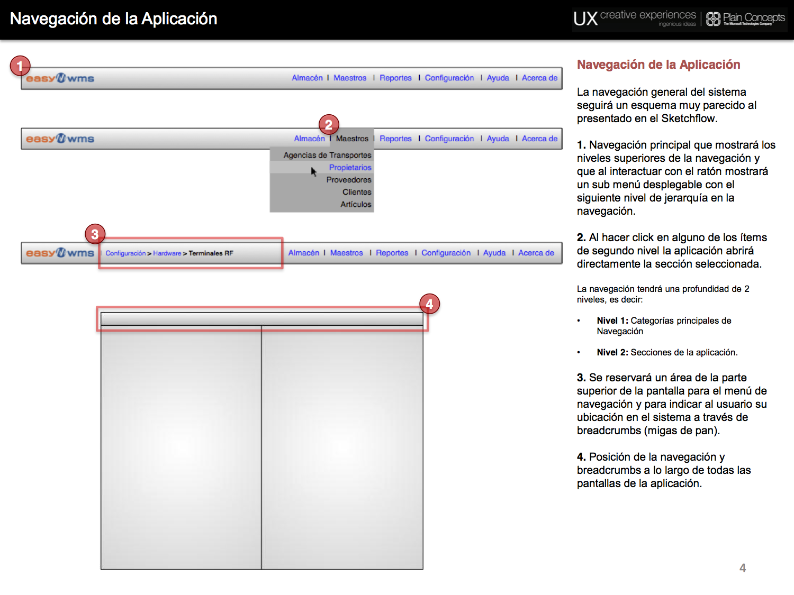
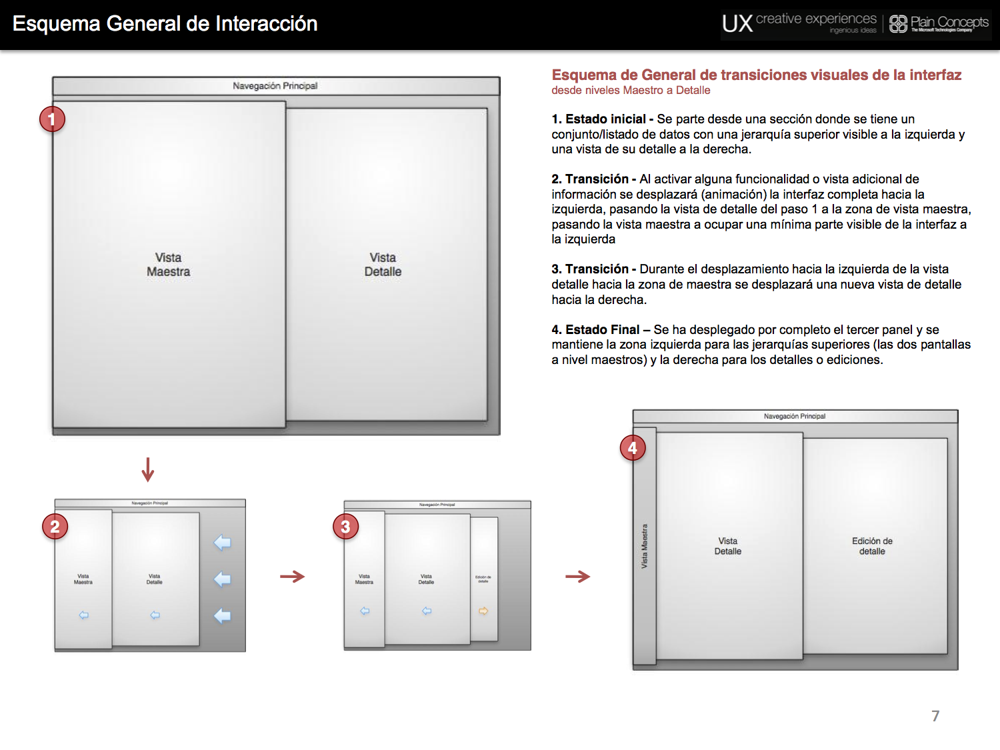
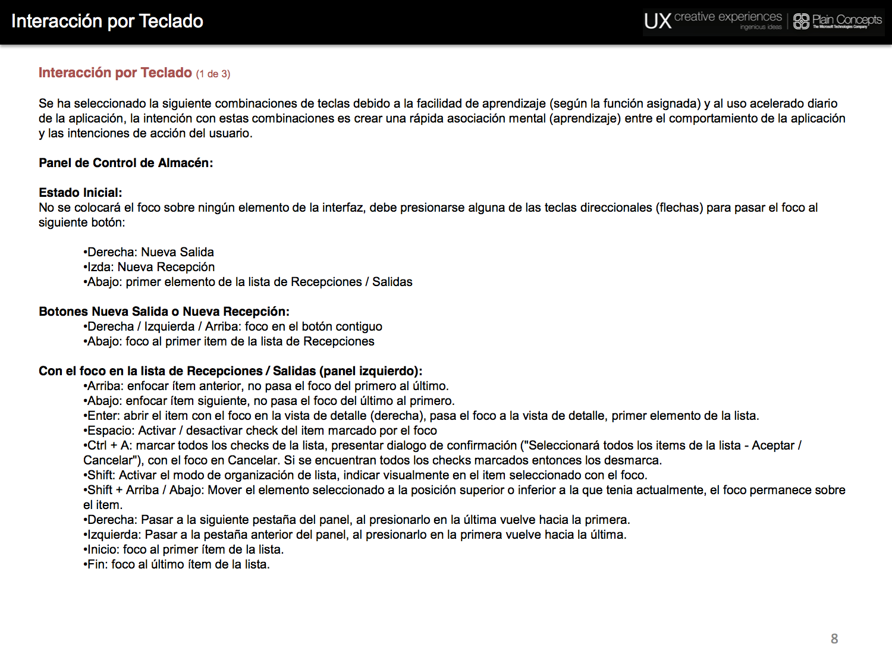
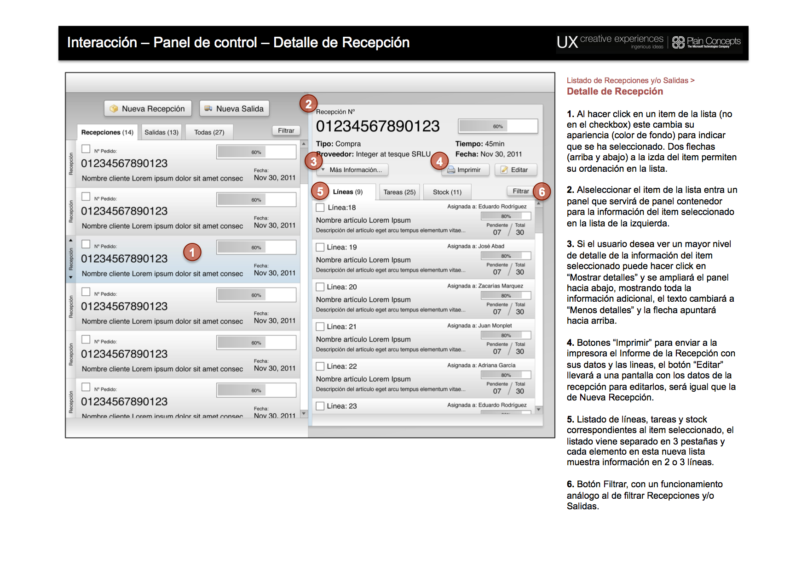
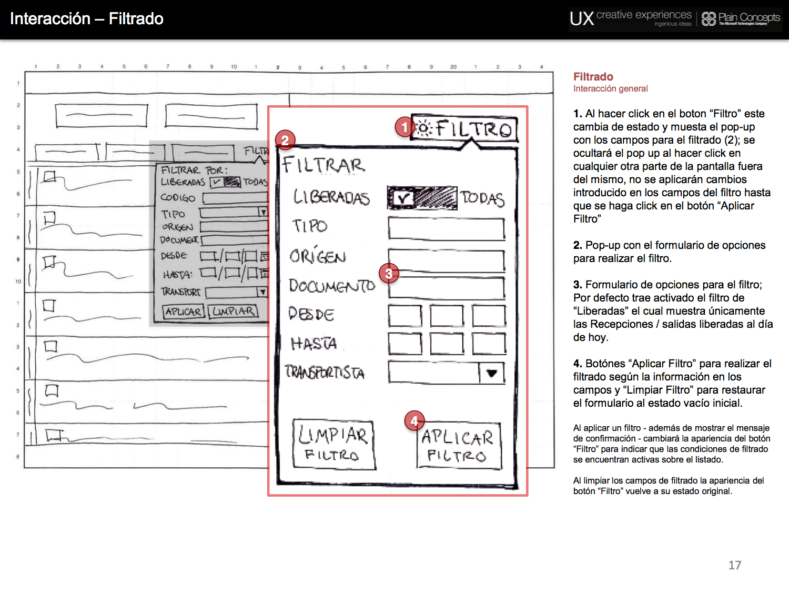

Warehouse Management App
Project Scope and Interaction Design
Interaction model, Information Architecture, Wireframing, Project Management, Design Advice
This project was about improving the overall UX design of a software for managing every aspect of warehouses and any kind of inventories, it was a complex redesign of their navigation, interaction model, information architecture and even some of the software's features.
Navigation and Interaction Model
IA + Navigation

Began by reorganising the old application menus and features. Defined clear areas for giving the right feedback to the user about navigation, software option menus and company logos.
UI visual transitions schema

After defining the screen major areas and their purpose, I devised a way for employing these areas to help the user understand how deep was him currently working at. This was done with consecuential panels that opened and collapsed as the user moved from low to high to low density information.
Keyboard interaction specs

Defined the way to help intermediate to advanced users to navigate the application without employing a mouse cursor, only by keyboard.
Interaction Specs
The warehouse management app was a behemoth, lots of distinct features with a huge range of micro interactions, we came to specify all of the high level interactions and screens and almost most of the critical micro interactions.
High fidelity wireframes

This sample wireframe documented how the different views would be populated with dummy data, also explained: how the focus would work on each on the panels, searching, editiom filtering and provided key information about each order status.
Micro-interactions

Defined the composition and interaction of complex elements like the listings filter option, specifying feedback to the user, application and removal of the filters.